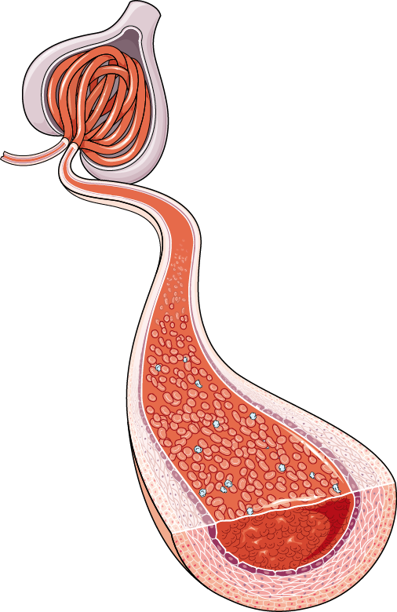
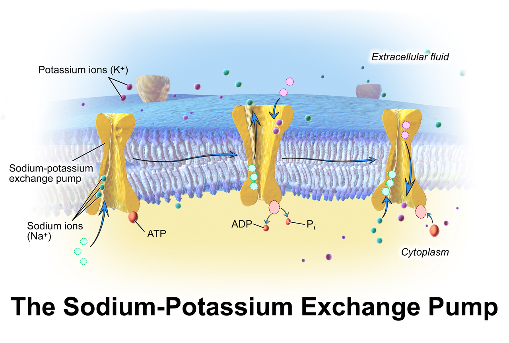
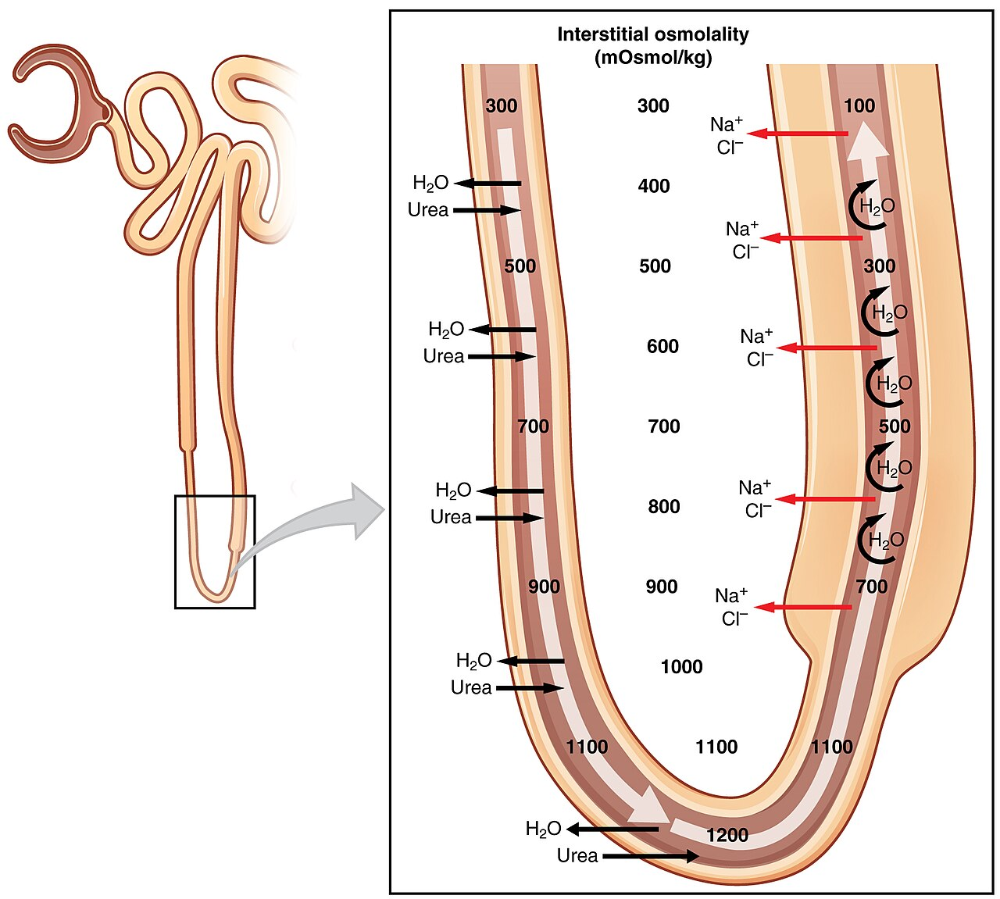
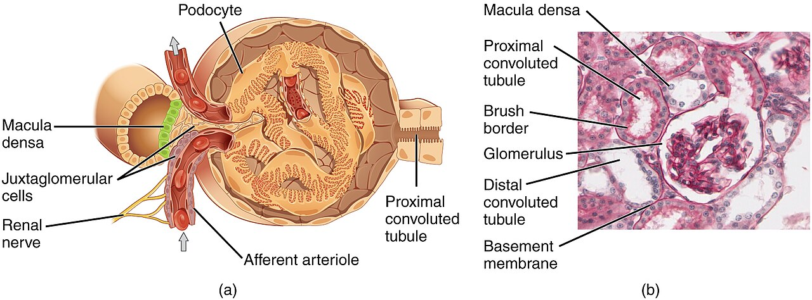
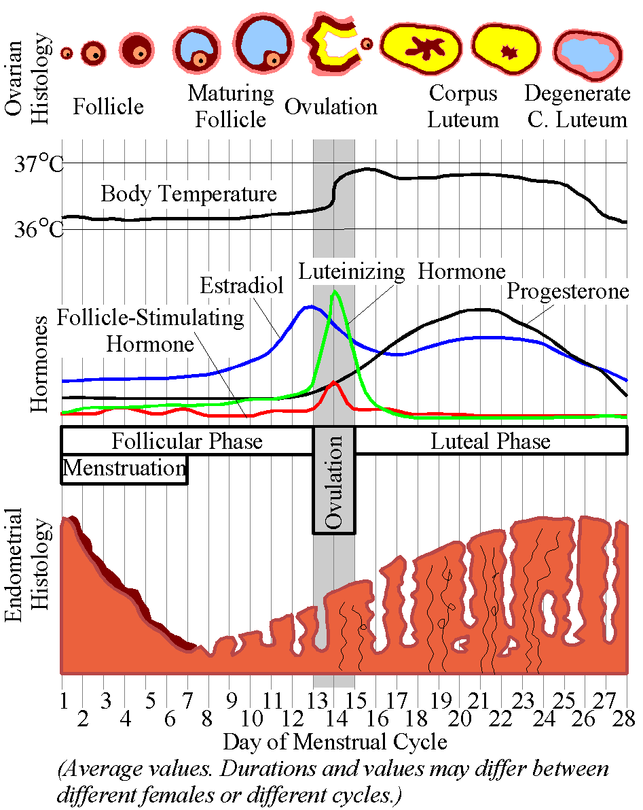

The Urinary and Reproductive Systems
The kidney is the body’s editor. It does not hunt through the blood for waste and pick it out. It dumps roughly 180 liters of plasma into the tubules each day. Then it decides, molecule by molecule, what to take back. Everything you have learned about pressure, gradients and feedback comes together here. Filtration runs on Starling forces, the push and pull of pressures. Reabsorption runs on the sodium gradient set by the Na+/K+ ATPase. And one hormone sets how strong the urine ends up. It works by opening water pores in a membrane. The kidney controls plasma volume, so it controls arterial pressure over days and weeks. It controls hydrogen and bicarbonate, so it sets pH alongside the lung. The reproductive systems then reuse the same logic in a different key. A pulsed signal from the hypothalamus. Two gonadotropins from the pituitary. Gonadal steroids feeding back. There is one famous inversion. In mid-cycle, feedback switches from negative to positive. That switch fires ovulation.
By the end of this module you can
- Work out net filtration pressure from the Starling forces at the glomerulus. Predict how each force changes the glomerular filtration rate (GFR), the volume filtered each minute.
- Explain renal autoregulation, the way the kidney steadies its own flow. Use the myogenic response and tubuloglomerular feedback. Name the sensor, the integrator and the effector.
- Trace sodium, water, glucose and potassium segment by segment. Link transport maximum and renal threshold to glycosuria, sugar in the urine.
- Describe the countercurrent multiplier and urea recycling. Together they build the 300–1200 mOsm/kg gradient in the medulla, the deep layer of the kidney.
- Draw the osmoreceptor–ADH–aquaporin-2 negative feedback loop. Tell diabetes insipidus apart from SIADH.
- Explain how the renin–angiotensin–aldosterone system, ANP and pressure natriuresis set arterial pressure over the long run.
- Use pH = 6.1 + log([HCO3-] / (0.03 × PaCO2)). Describe how the kidney makes up for an acid–base disturbance.
- Outline the hypothalamic–pituitary–gonadal axis and spermatogenesis, the making of sperm. Say which hormones run the ovarian and uterine cycles.
- Point out where real positive feedback works in reproduction. The LH surge and labor are the two. Say why it is the exception.
Section 1Filtration: making 180 liters a day

Why the kidney gets a quarter of the cardiac output
The two kidneys weigh about 300 g together. That is roughly 0.4 percent of body mass. Yet they receive 1.0 to 1.2 L/min of blood. That is about 20 to 25 percent of resting cardiac output. It is far more than their own fuel needs. The flow is not there to deliver oxygen. It is the raw material for filtration. About 600 to 625 mL/min of plasma enters the kidney. That amount is called renal plasma flow. About 125 mL/min of it crosses into Bowman’s space. Divide GFR by renal plasma flow and you get the filtration fraction. It is normally about 0.20.
The layout of the blood vessels is the whole trick. Blood enters the glomerulus through an afferent arteriole. It leaves through an efferent arteriole. So a capillary bed sits between two vessels that can squeeze down. Ordinary capillaries drain into venules. Their pressure falls to 10–15 mmHg by the venous end. Glomerular capillaries drain into another arteriole instead. So their hydrostatic pressure stays high, about 55 mmHg, along their whole length. Filtration therefore runs all the way along. It does not happen only at the arterial end. Downstream sit the peritubular capillaries. They wrap around the tubules. They run at only 10–15 mmHg and hold a high oncotic pressure, the inward pull of protein. That makes them ideal for taking fluid back.
Two arterioles in a row also give the kidney two separate dials. Narrow the afferent arteriole and glomerular pressure falls. GFR falls with it. Narrow the efferent arteriole and glomerular pressure rises. GFR rises too, up to a point. Total renal blood flow drops at the same time. Angiotensin II narrows the efferent arteriole most of all. That is why a falling blood pressure does not collapse filtration straight away. It is also why drugs that block that pathway can drop GFR sharply. The danger is greatest in a patient who is already low on fluid.
The three-layer filter
Filtrate crosses three barriers. The first is the fenestrated endothelium, the capillary lining full of windows. Its pores are 70–100 nm wide. They hold back cells but almost nothing that is dissolved. The second is the glomerular basement membrane. It is a dense mesh of type IV collagen and laminin. Heparan sulfate proteoglycans stud that mesh and carry a negative charge. The third is the filtration slits. These are the gaps between the interlocking foot processes of podocytes, cells that grip the capillary like fingers. A slit diaphragm built from nephrin bridges each gap. The working gaps are roughly 4–11 nm.
The result is a filter that sorts by size and by charge. Molecules under about 5 kDa pass almost freely. That list includes water, sodium, potassium, glucose, urea, creatinine and amino acids. Their concentration in the filtrate matches their concentration in plasma. Above roughly 70 kDa, almost nothing gets through. Albumin sits awkwardly at 69 kDa. It also carries a strong negative charge. The basement membrane is negative too, so it pushes albumin away and keeps it in the blood. Normal urine holds under 30 mg of albumin per day. Damage the charge barrier and albumin turns up in the urine early. It appears long before the size barrier fails. Early diabetic nephropathy, kidney damage from diabetes, is the classic example. That is why microalbuminuria, a small amount of albumin in urine, is an early marker and not a late one.
Starling forces and net filtration pressure
Filtration at the glomerulus follows the same Starling rule you met in the capillary module. Net filtration pressure (NFP) is the outward hydrostatic push minus everything pushing back. Those opposing forces are hydrostatic and oncotic:
NFP = (PGC − PBS) − (πGC − πBS)
Put in the usual values. PGC, the pressure inside the glomerular capillary, is 55 mmHg. PBS, the hydrostatic pressure in Bowman’s space, is 15 mmHg. πGC, the oncotic pull of protein in that capillary, is 30 mmHg. πBS is essentially 0, because protein does not cross. So NFP = (55 − 15) − 30 = 10 mmHg. Then GFR = Kf × NFP. Kf is the filtration coefficient. It is surface area multiplied by how easily water crosses. The glomerular Kf is about 12.5 mL/min/mmHg. Per gram of tissue that is some 400 times an everyday capillary bed such as skeletal muscle. That is how a mere 10 mmHg makes 125 mL/min.
Each clinical disturbance of GFR maps onto one of these terms. Bleeding lowers PGC. A stone blocking the ureter raises PBS. It can drive NFP toward zero. Severe dehydration raises πGC. Glomerulonephritis, inflammation of the glomeruli, lowers Kf as mesangial cells multiply. So when you are asked why GFR fell, ask which of the four numbers moved.
| Force | Typical value | Direction | Raised by |
|---|---|---|---|
| Glomerular capillary hydrostatic (PGC) | 55 mmHg | Favors filtration | Efferent narrowing, afferent widening, high MAP |
| Bowman’s space hydrostatic (PBS) | 15 mmHg | Opposes | A blocked ureter, casts plugging the tubule |
| Glomerular capillary oncotic (πGC) | 30 mmHg | Opposes | Dehydration, high plasma protein |
| Bowman’s space oncotic (πBS) | ~0 mmHg | Favors | Heavy protein loss in urine (the barrier fails) |
| Net filtration pressure | ~10 mmHg | — | — |
Autoregulation: the loop that protects GFR
Mean arterial pressure swings from 80 to 180 mmHg during everyday life. Yet renal blood flow and GFR barely move. Two mechanisms hold them steady. The first is the myogenic response. It is built into the smooth muscle of the vessel itself. Pressure stretches the afferent arteriole. Stretch opens cation channels, and the muscle cells depolarize. Voltage-gated calcium channels then open. The vessel constricts within one to two seconds. A higher driving pressure is met by a higher resistance. So by Q = ΔP / R, the flow does not change.
The second is tubuloglomerular feedback. It is worth laying out as a formal negative feedback loop. The regulated variable is the delivery of sodium chloride to the end of the thick ascending limb. That delivery stands in for GFR. The sensor is the macula densa. It is a small patch of tubule cells that taste the fluid. The patch leans against its own glomerulus. The integrator is the juxtaglomerular apparatus. There the macula densa cells release ATP and adenosine. The effector is the afferent arteriole, plus the granular cells that secrete renin. Now the response. If GFR rises, NaCl delivery rises. The macula densa signals with adenosine. The afferent arteriole constricts, and GFR falls back. If GFR falls, NaCl delivery falls. Adenosine release falls. The afferent arteriole relaxes, and renin release increases. That restores filtration and calls in the whole-body pressure response. The loop settles within 30–60 seconds. It is how a single nephron defends its own filtration rate.
Filtration is a purely physical event. A net Starling pressure of about 10 mmHg drives it across a barrier that is remarkably leaky. Two local mechanisms protect it from pressure swings. They are the myogenic response and tubuloglomerular feedback. No hormone is involved.
Section 2Reabsorption and secretion: editing the filtrate

One pump, many passengers
Each tubule cell carries a Na+/K+ ATPase on its basolateral membrane, the side facing the blood. For each ATP it spends, it exports 3 Na+ and imports 2 K+. That keeps sodium inside the cell low, about 10–15 mmol/L against 140 mmol/L in the filtrate. It also keeps the inside of the cell negative, roughly −70 mV. That electrochemical gradient is the currency the tubule spends. Sodium slides back in across the apical membrane, the side facing the urine. On the way it can drag glucose uphill with it through SGLT2 and SGLT1. It can drag amino acids, phosphate and lactate the same way. That is secondary active cotransport. Sodium can instead be exchanged for hydrogen ions leaving the cell through NHE3. That exchange is countertransport. Block the pump with ouabain, or starve the cell of oxygen, and each one of these steps stops. Reabsorption consumes roughly 8 percent of the whole body’s resting oxygen use. The thick ascending limb of the medulla works hard on a thin blood supply. It is the segment most easily hurt by ischemia, a shortage of blood flow.
Water then follows the solute that was reabsorbed. It can only follow where the lining lets water through. In the proximal tubule the tight junctions are leaky. Aquaporin-1 water channels are plentiful. So water follows solute almost instantly. The fluid stays isosmotic at about 300 mOsm/kg all the way along. Isosmotic means its concentration matches plasma. Volume falls. Concentration does not.
The proximal tubule does the bulk work
The proximal convoluted tubule does the bulk of the work. By its end, about 65 percent of filtered sodium and water has been reclaimed. So has 65 percent of the potassium. So has 80–90 percent of the filtered bicarbonate. Essentially 100 percent of filtered glucose and amino acids is back as well. Roughly 45 mL/min of the original 125 mL/min carries on into the loop. This is bulk transport, and nothing regulates it. The proximal tubule reabsorbs a fixed fraction rather than a fixed amount. That behavior is called glomerulotubular balance. Because of it, a rise in GFR does not flood the distal nephron.
Bicarbonate reclaiming deserves its own note, because it is not reabsorbed as bicarbonate. The cell first secretes H+ into the lumen. That H+ joins filtered HCO3- to form carbonic acid. Carbonic anhydrase IV in the lumen splits the acid into CO2 and water. The CO2 diffuses into the cell. Carbonic anhydrase II adds the water back. The HCO3- made this way leaves on the blood side. So the kidney reclaims bicarbonate by secreting acid. Once you see that, carbonic anhydrase inhibitors are easy to understand.
Transport maximum and renal threshold
Carrier-mediated reabsorption saturates. For glucose the job is shared by SGLT2 and SGLT1. SGLT2 sits in the proximal tubule and has a high capacity. SGLT1 sits later and has a high affinity, meaning it grips tightly. Together they have a transport maximum (Tm) of about 375 mg/min in an adult. Filtered load = GFR × plasma concentration. So at a plasma glucose of 100 mg/dL and a GFR of 125 mL/min, the filtered load is about 125 mg/min. That is reabsorbed easily, and the urine is glucose free. The filtered load reaches Tm at a plasma glucose near 300 mg/dL. Yet glucose starts appearing in urine at about 180–200 mg/dL. Nephrons are not all alike. The ones with the highest filtered load per carrier spill first. That earlier point is the renal threshold. The gap between threshold and Tm is called splay.
The clinical payoff is immediate. In uncontrolled diabetes, glucose spills into the urine. That unreabsorbed glucose holds water in the lumen and creates an osmotic diuresis. So the patient passes a lot of urine, which is polyuria. Heavy thirst follows, which is polydipsia. Pregnancy raises GFR by 40–50 percent. It can cause harmless glycosuria at a normal blood glucose. SGLT2 inhibitors lower the threshold on purpose. They dump 50–80 g of glucose per day into the urine.
| Segment | Share of filtered Na+ taken back | Main apical transporter | Water permeable? |
|---|---|---|---|
| Proximal convoluted tubule | ~65% | NHE3, SGLT2, amino acid cotransporters | Yes (AQP1) — isosmotic |
| Thin descending limb | 0% | — | Yes (AQP1) — water only |
| Thick ascending limb | ~25% | NKCC2 (Na-K-2Cl) | No — the “diluting segment” |
| Distal convoluted tubule | ~5% | NCC (Na-Cl), plus PTH-sensitive Ca2+ entry | No |
| Collecting duct (principal cell) | ~3%, tuned by aldosterone | ENaC, and ROMK for K+ secretion | Only when ADH inserts AQP2 |
Secretion, clearance and how we measure GFR
The tubule also moves substances the other way. It carries them from the peritubular blood into the lumen. Organic anion and organic cation transporters in the proximal tubule do this. They secrete urate, bile salts and creatinine. They also secrete a long list of drugs. Penicillin, furosemide and metformin are on that list. Secretion lets the kidney clear a substance faster than filtration alone allows. It also means two drugs that share a transporter will compete. Probenecid uses that competition to prolong penicillin levels.
Renal clearance is the volume of plasma cleared of a substance per minute. The formula is C = (U × V) / P. U is the urine concentration. V is the urine flow rate. P is the plasma concentration. Now take a substance that is freely filtered and then left alone. Nothing reabsorbs it and nothing secretes it. Its clearance equals GFR. Inulin is the laboratory standard for this. In practice we use creatinine. Creatinine is freely filtered and only slightly secreted. So creatinine clearance overestimates true GFR by 10–15 percent. That is acceptable for clinical work. One warning is worth remembering. The relationship is reciprocal, and it is steep at the healthy end. A serum creatinine rising from 0.8 to 1.6 mg/dL means GFR has roughly halved. Both numbers still look small.
Reabsorption is powered by sodium. Most of it is finished by the end of the proximal tubule. Bulk transport there is unregulated, and it can saturate. Regulation lives downstream in the distal nephron. Measurement lives downstream too, in the idea of clearance.
Section 3Concentrating and diluting: countercurrent and ADH

How the loop builds a gradient
To excrete concentrated urine, the kidney needs salty tissue around the collecting duct. That hyperosmotic tissue draws water out. The kidney builds it with the countercurrent multiplier. The thin descending limb lets water through but not salt. The thick ascending limb blocks water but pumps NaCl out through NKCC2. Take a single step. The ascending limb pumps sodium into the surrounding tissue. Local osmolality rises there by about 200 mOsm/kg. That is the single effect. It is limited by how steep a gradient NKCC2 can sustain. Water then leaves the descending limb next door. The fluid inside that limb grows more concentrated. New filtrate pushes the column along. The already-concentrated fluid enters the ascending limb, and the pump acts on it again. Repeat that hundreds of times along a hairpin of increasing length. A modest 200 mOsm/kg single effect is multiplied along the axis. The result is a gradient running from 300 mOsm/kg at the corticomedullary junction to about 1200 mOsm/kg at the papillary tip.
Two results follow. First, only nephrons with long loops can build deep gradients. Those are the juxtamedullary nephrons, roughly 15 percent of the total. Desert rodents have enormously long loops. They concentrate to 5000 mOsm/kg. Humans stop near 1200. Second, the ascending limb removes solute without water. So the fluid leaving the loop is hypo-osmotic, about 100 mOsm/kg. Hypo-osmotic means more dilute than plasma. The kidney always dilutes first. Then it decides whether to reconcentrate.
Vasa recta and urea recycling
A gradient is useless if the blood supply washes it away. The vasa recta solve this by being hairpins themselves. Descending vessels dive into the medulla. They lose water and gain solute on the way down. Ascending vessels do the reverse on the way up. So solute is passively trapped rather than carried off. This is countercurrent exchange. It is a passive process, which makes it different from the active multiplier in the loop. Medullary blood flow is also kept on purpose low. It is under 10 percent of renal blood flow. That preserves the gradient. The cost is that the medulla sits chronically near the edge of hypoxia, a shortage of oxygen.
Urea contributes roughly 40–50 percent of the inner medullary osmolality. Most of the nephron is impermeable to urea. So as water is reabsorbed, the urea in the lumen grows more concentrated. In the inner medullary collecting duct, ADH switches on the UT-A1 and UT-A3 transporters. They let that concentrated urea move into the surrounding tissue. There it adds osmotic pull. Some of it re-enters the thin limbs and cycles again. This is why a person on a very low protein diet concentrates urine less well. There is less urea available to build the gradient.
The ADH loop, written out
Here is the module’s central negative feedback circuit. Variable: plasma osmolality, normally held between 275 and 295 mOsm/kg. Sensor: osmoreceptor neurons. They sit in the organum vasculosum of the lamina terminalis and in the subfornical organ. They shrink when plasma osmolality rises, and then they fire faster. Integrator: magnocellular neurons of the supraoptic and paraventricular nuclei of the hypothalamus. Output signal: antidiuretic hormone (ADH, vasopressin). Those same neurons make it. Their axon terminals release it in the posterior pituitary. Effector: the collecting duct principal cell. ADH binds V2 receptors there and raises cyclic AMP. That moves aquaporin-2 vesicles into the apical membrane. Response: water is reabsorbed down the osmotic gradient into the hyperosmotic medulla. Urine volume falls. Plasma osmolality falls back toward set point. Osmoreceptor firing subsides.
The numbers are worth memorizing, because the system is very sensitive. ADH secretion begins around 280 mOsm/kg and then rises steeply. A rise of 1 to 2 percent in osmolality clearly increases ADH. That is about 3 mOsm/kg. Thirst is not triggered until roughly 293 mOsm/kg. Suppress ADH fully and urine osmolality can fall to 50 mOsm/kg. Output can then reach 15–20 L/day. Raise ADH to its maximum and urine reaches 1200 mOsm/kg. Output falls to the obligatory minimum of about 500 mL/day. That is the volume needed to carry the daily 600 mOsm solute load. Volume matters too. A fall in blood volume of more than 8–10 percent will drive ADH release. Baroreceptors sense that fall. ADH then rises even against a low osmolality. The body defends perfusion before it defends concentration.
| State | ADH level | Renal response | Urine osmolality | Serum Na+ |
|---|---|---|---|---|
| Central diabetes insipidus | Low (none made or released) | No AQP2 put into the membrane | Under 300 mOsm/kg, often 50–150 | High or high-normal |
| Nephrogenic diabetes insipidus | High | V2 receptor or AQP2 cannot answer | Under 300 mOsm/kg | High or high-normal |
| SIADH | Inappropriately high | Too much water held back | Over 100, typically concentrated | Low (often 120–130 mmol/L) |
| Water loading, healthy | Suppressed | Diluted as far as possible | 50–100 mOsm/kg | Normal |
The loop of Henle actively multiplies a 200 mOsm/kg single effect into a 1200 mOsm/kg medullary gradient. The vasa recta preserve that gradient passively. ADH then decides how much of it the collecting duct is allowed to use.
Section 4Pressure, potassium, pH — and emptying the bladder

The kidney sets blood pressure over days, not seconds
Baroreceptors correct pressure in seconds. The kidney corrects it over hours to days. When the two disagree, the kidney wins. The mechanism is pressure natriuresis. A rise in mean arterial pressure increases sodium and water excretion. Plasma volume falls. Venous return and cardiac output fall with it. Pressure returns toward set point. Output keeps exceeding intake for as long as pressure sits above set point. Balance returns only once pressure has come back down. That is why the renal function curve has infinite long-term gain. Sustained hypertension therefore requires a resetting of that curve.
The opposing arm is the renin–angiotensin–aldosterone system. Renin is released from the granular cells of the afferent arteriole. These are also called juxtaglomerular cells. Three signals release it. The first is reduced stretch of the afferent arteriole. The second is reduced NaCl sensed by the macula densa. The third is sympathetic beta-1 stimulation. Renin cleaves angiotensinogen from the liver into angiotensin I. Angiotensin-converting enzyme then converts that into angiotensin II. That enzyme sits mostly on the lining of the pulmonary capillaries. Angiotensin II acts at five sites at once. It constricts arterioles throughout the body, raising total peripheral resistance. It constricts the efferent arteriole most of all, preserving GFR. It drives proximal NHE3 directly, increasing sodium reabsorption. It drives the adrenal zona glomerulosa to release aldosterone. And it drives the hypothalamus to raise thirst and ADH.
Aldosterone acts on principal cells of the collecting duct over 1–2 hours. It works by increasing transcription of ENaC, ROMK and the Na+/K+ ATPase. Sodium is retained. Potassium and hydrogen are secreted. Opposing all of this is atrial natriuretic peptide (ANP). Atrial muscle cells release it when volume overload stretches them. ANP dilates the afferent arteriole and raises GFR. It inhibits renin and aldosterone. It promotes sodium loss. So volume regulation is a tug of war. One system retains sodium and the other dumps it. Where they balance sets the extracellular fluid volume.
Potassium: a narrow window defended by secretion
Plasma potassium is held between 3.5 and 5.0 mmol/L. Yet 98 percent of body potassium is inside cells. The resting membrane potential depends on the ratio of intracellular to extracellular K+. So small changes outside the cell have outsized effects on excitable tissue. Hyperkalemia, a high plasma potassium, depolarizes cells and inactivates sodium channels. It makes peaked T waves and eventually cardiac arrest.
Nearly all filtered potassium is reabsorbed early. The proximal tubule and the thick ascending limb take it back. So the amount excreted is set almost entirely by secretion. Principal cells of the collecting duct secrete it through ROMK and BK channels. Three things drive that secretion. The first is aldosterone. The second is a high distal flow rate, which sweeps K+ away and keeps the gradient steep. The third is plasma potassium itself, acting directly on the adrenal cortex. Acid–base status matters too. H+ and K+ trade across cell membranes. So acidosis tends to raise plasma K+, and alkalosis tends to lower it. This explains a familiar pattern. Loop and thiazide diuretics cause hypokalemia, a low plasma potassium, because they raise distal flow and aldosterone. ENaC blockers and aldosterone antagonists are potassium sparing instead.
Acid–base: the slow, powerful partner of the lung
The Henderson–Hasselbalch equation describes the bicarbonate buffer system. It reads pH = 6.1 + log([HCO3-] / (0.03 × PaCO2)). Take a normal HCO3- of 24 mmol/L and a PaCO2 of 40 mmHg. The ratio is 24 / 1.2 = 20. Log 20 = 1.3. So pH = 7.4. The lung sets the denominator within minutes. The kidney sets the numerator over 1–3 days. The kidney is slower, but it has far greater capacity.
The kidney does two distinct jobs here. First it reclaims bicarbonate. Roughly 4300 mmol is filtered daily, and the proximal tubule takes most of it back as described earlier. That job merely prevents acidosis. Second, it generates new bicarbonate. It does so by excreting the fixed acid made each day from protein metabolism, some 50–100 mmol. Type A intercalated cells pump H+ into the lumen with an apical H+-ATPase. Free H+ on its own would drop urine pH below about 4.5, and the kidney cannot go lower than that. So the acid must be buffered. Filtered phosphate buffers part of it, and that part is called titratable acid. Under stress, ammonia matters more. Proximal cells deaminate glutamine to make NH4+. At the same time they generate a new HCO3- that enters the blood. Ammoniagenesis can increase severalfold over days. That is why renal compensation is slow to arrive but very hard to exhaust.
Endocrine kidney and the micturition reflex
The kidney is also a gland. Fibroblasts in the tissue around the tubules sense the oxygen level. They do it through hypoxia-inducible factor. When oxygen is low they release erythropoietin. That hormone drives red cell production in the marrow. It is a negative feedback loop. Its failure explains the normocytic anemia of chronic kidney disease. Proximal tubule cells carry another enzyme, 1-alpha-hydroxylase. Under the influence of parathyroid hormone it converts 25-hydroxyvitamin D into active calcitriol. Calcitriol then raises calcium absorption from the intestine. Losing that enzyme explains a great deal. It is why renal failure makes hypocalcemia, secondary hyperparathyroidism and renal bone disease.
Finally, storage and voiding. Urine passes down the ureters by peristalsis, roughly every 10–30 seconds. It enters the bladder through oblique tunnels in the bladder wall. Those tunnels act as one-way flap valves. The detrusor muscle takes in filling with almost no rise in pressure. That is receptive relaxation. It lasts until about 150–250 mL, when the first conscious urge appears. Comfortable capacity is 300–500 mL. Stretch receptors then fire through pelvic afferents to the sacral micturition center at S2–S4. The parasympathetic outflow contracts the detrusor through muscarinic M3 receptors. It also relaxes the internal urethral sphincter. The somatic pudendal nerve holds the external sphincter closed, and you inhibit it voluntarily. The pontine micturition center coordinates the two. It makes sure the sphincter opens before the detrusor squeezes. The external sphincter is skeletal muscle under cortical control. That is why continence is learned. It is lost when a spinal cord lesion above the sacral center disconnects pontine coordination. The result is a reflexic bladder that empties without permission.
By controlling sodium, the kidney controls volume and therefore long-term arterial pressure. By controlling potassium secretion and acid excretion, it protects excitable membranes and pH. By making erythropoietin and calcitriol, it works as an endocrine organ. Failure in those roles explains most of the syndrome of chronic kidney disease.
Section 5Reproductive physiology: one axis, two patterns

The shared hypothalamic–pituitary–gonadal axis
Both sexes run the same three-tier control system. Hypothalamic neurons release gonadotropin-releasing hormone (GnRH) in pulses. One pulse comes every 60 to 120 minutes. It travels in the hypophyseal portal circulation, a short run of vessels into the pituitary. The pulsing is not a detail. Continuous GnRH turns down pituitary receptors and shuts the axis off. That is exactly how GnRH agonists are used as therapy. Gonadotroph cells of the anterior pituitary answer the pulses. They secrete follicle-stimulating hormone (FSH) and luteinizing hormone (LH). The gonads answer with steroids and peptides. The steroids are testosterone, estradiol and progesterone. The peptide is inhibin B. All of them feed back on the hypothalamus and the pituitary.
In the classical arrangement this is straightforward negative feedback. Gonadal steroid rises. GnRH pulse frequency falls, and gonadotropin output falls with it. Kisspeptin neurons in the arcuate nucleus are the relay. Steroids act on GnRH cells through them. Those same neurons are also where nutrition, leptin and stress gate reproduction. That is why very low body fat or an intense energy deficit suppresses the axis at the top. The block sits in the brain, not at the gonad.
The male pattern: steady state
LH acts on Leydig cells, which sit in the spaces between the tubules of the testis. LH makes them convert cholesterol into testosterone. Adult levels run roughly 300–1000 ng/dL, with a morning peak. FSH acts on Sertoli cells, which line the seminiferous tubules. Sertoli cells nurse developing germ cells. They form the blood–testis barrier. They make androgen-binding protein, which keeps testosterone inside the tubule 50–100 times higher than in plasma. They also secrete inhibin B. The feedback is neatly divided. Testosterone suppresses LH, and GnRH with it. Inhibin B selectively suppresses FSH. That division lets the body regulate steroid output and sperm output almost separately.
Spermatogenesis takes 64 to 74 days from spermatogonium to spermatozoon. A further 10–14 days of maturation follow in the epididymis. There the sperm acquire motility and the ability to bind the zona. Production runs roughly 100–200 million sperm per day. A typical ejaculate of 2–5 mL contains 200–300 million. The lower reference limit for concentration is about 15 million/mL. The process requires a scrotal temperature 2–3 °C below core. The pampiniform venous plexus keeps up it. It works as a countercurrent heat exchanger. That is the same physical principle you met in the vasa recta, used for heat instead of solute. Production is continuous and feedback is tonic. So male hormone levels stay about steady from day to day.
The female pattern: a cycle built on a feedback inversion
The ovarian cycle averages 28 days, with a normal range of 21 to 35. In the follicular phase, rising FSH recruits a cohort of antral follicles. Theca cells make androgens under the drive of LH. Granulosa cells then aromatize those androgens into estradiol under the drive of FSH. That is the two-cell, two-gonadotropin model. Estradiol and inhibin B feed back negatively, so FSH falls. The follicle with the most FSH receptors survives that withdrawal and becomes dominant. The rest undergo atresia. So selection happens by declining hormone, not by rising hormone.
Then comes the inversion. Estradiol climbs above roughly 200 pg/mL and stays there for about 48 hours. At that point its effect on the hypothalamic–pituitary unit flips from inhibitory to stimulatory. The result is genuine positive feedback. More estradiol drives more LH. More LH drives more estradiol. That loop makes the LH surge. Ovulation follows 24–36 hours after the surge begins. It comes about 10–12 hours after the peak. The surge triggers resumption of meiosis I. It breaks down the follicular wall, and the follicle ruptures. The positive feedback ends itself for an obvious reason. The follicle that generated the signal has ruptured and stops making it. Labor and clotting can use positive feedback safely for the same reason. Each has a definite end point that removes the stimulus.
The luteal phase is the most predictable part of the cycle. It lasts 14 days plus or minus 2, whatever the overall cycle length. Almost all the variation in cycle length lives in the follicular phase. The ruptured follicle becomes the corpus luteum. It secretes progesterone, peaking around 10–20 ng/mL at day 21. It secretes estradiol and inhibin A as well. Progesterone raises basal body temperature by 0.3–0.5 °C. It thickens cervical mucus. It converts the endometrium from proliferative to secretory. It also restores strong negative feedback. That slows GnRH pulses and prevents a second ovulation. If no embryo appears, the corpus luteum breaks down after 12–14 days. Progesterone and estrogen fall. Spiral arterioles constrict. The functional layer of the endometrium is shed as menstruation. Falling steroid removes the brake on FSH, so the next cohort is recruited.
| Days (28-day cycle) | Ovarian phase | Uterine phase | Dominant hormone | Feedback mode |
|---|---|---|---|---|
| 1–5 | Early follicular | Menstrual | FSH rising | Negative, brake comes off |
| 6–13 | Late follicular | Proliferative | Estradiol rising | Negative |
| ~14 | Ovulation | — | LH surge | Positive |
| 15–28 | Luteal | Secretory | Progesterone | Strong negative |
Fertilization, pregnancy and labor
The oocyte is viable for 12–24 hours. Sperm survive 3–5 days in favorable cervical mucus. So the fertile window is roughly the five days before ovulation plus the day of it. Fertilization occurs in the ampulla of the uterine tube. Capacitated sperm bind ZP3 in the zona pellucida. The acrosome reaction releases enzymes that digest a path through. One sperm fuses, and that triggers a calcium wave. The cortical reaction follows and hardens the zona. That zona reaction is the slow block to polyspermy, meaning entry by more than one sperm. The fast block is the brief membrane depolarization at the moment of fusion. The zygote reaches the uterus as a blastocyst around day 5–6. It implants around day 6–10 after ovulation.
The syncytiotrophoblast secretes human chorionic gonadotropin (hCG). It is an LH analog, so the ovary reads it as LH. It rescues the corpus luteum from its scheduled death and keeps progesterone flowing. hCG roughly doubles every 48 hours in early pregnancy. It peaks at 8–10 weeks and then falls. By weeks 8–10 the placenta takes over steroid production. That handover is the luteal–placental shift. Progesterone keeps up the endometrium. It keeps the myometrium quiescent throughout gestation. Pregnancy also raises plasma volume by 40–50 percent. It raises GFR by 40–50 percent as well. That is why serum creatinine falls in normal pregnancy.
Labor is the second clear example of physiological positive feedback. The fetal head descends and stretches the cervix. Stretch receptors signal the hypothalamus. The posterior pituitary releases oxytocin. Oxytocin contracts the myometrium. Near term the myometrium carries many times more oxytocin receptors, so it answers strongly. Oxytocin also drives placental prostaglandins. The contraction pushes the head harder against the cervix. The loop amplifies. It stops for the same structural reason ovulation stops. Delivery removes the stimulus. Afterwards a third loop takes over. Suckling triggers oxytocin for milk ejection and prolactin for milk synthesis. Prolactin also suppresses GnRH pulses. That gives lactational suppression of ovulation.
Both sexes run a pulsatile GnRH–gonadotropin–steroid axis under negative feedback. The female cycle differs for one reason. Sustained high estradiol inverts that feedback to positive for about 48 hours. That inversion is what causes ovulation. No new hormone is needed.
The module in one breath
The kidney filters about 180 L of plasma each day. A net Starling pressure of only 10 mmHg drives it. Two local mechanisms protect that rate against pressure swings. They are the afferent myogenic response and tubuloglomerular feedback from the macula densa. Almost all of that filtrate is reclaimed. Each reclaiming step is ultimately paid for by the basolateral Na+/K+ ATPase. The proximal tubule takes back 65 percent of sodium and water isosmotically. It takes back all the glucose and amino acids too. Its carriers saturate at a transport maximum, and that explains glycosuria. The loop of Henle then uses countercurrent multiplication. It converts a 200 mOsm/kg single effect into a 1200 mOsm/kg medullary gradient. Vasa recta countercurrent exchange preserves that gradient. Urea recycling tops it up. Osmoreceptors detect a 1–2 percent rise in plasma osmolality, and ADH is released. ADH inserts aquaporin-2 and decides how much of the gradient the collecting duct uses. Sodium handling by RAAS, aldosterone and ANP sets extracellular volume, and therefore long-term arterial pressure. Potassium and acid excretion protect excitable membranes and pH. The reproductive systems reuse the same feedback architecture through GnRH, FSH and LH. There is one planned inversion, the estradiol-driven LH surge. And there is one planned amplifier at birth, the oxytocin loop of labor.
Words worth knowing
| Term | What it means |
|---|---|
| Glomerular filtration rate (GFR) | How much filtrate all the nephrons make each minute. Normally about 125 mL/min, or 180 L/day. |
| Net filtration pressure | (PGC − PBS) − (πGC − πBS). It is about 10 mmHg at the glomerulus. |
| Filtration fraction | GFR divided by renal plasma flow. Normally about 0.20. |
| Podocyte | A cell of Bowman’s capsule that grips the capillary. Its foot processes form the slit diaphragm, the last barrier that sorts by size. |
| Tubuloglomerular feedback | The macula densa senses how much NaCl arrives distally. It then adjusts afferent arteriolar tone to steady the GFR of that one nephron. |
| Juxtaglomerular apparatus | The macula densa plus the granular cells at the vascular pole. Renin release and tubuloglomerular feedback both happen here. |
| Transport maximum (Tm) | The point at which a carrier system is full. For glucose it is about 375 mg/min. |
| Renal threshold | The plasma level at which a substance first appears in urine. For glucose it is about 180–200 mg/dL. |
| Glomerulotubular balance | The proximal tubule takes back a constant fraction of whatever is filtered, about 65 percent. |
| Clearance | C = (U × V) / P. It is the volume of plasma cleared of a substance each minute. |
| Countercurrent multiplier | An active mechanism in the loop of Henle. It multiplies a 200 mOsm/kg single effect into a 300–1200 mOsm/kg gradient along the axis. |
| Countercurrent exchange | The hairpin vasa recta trap solute passively. That preserves the medullary gradient. |
| Aquaporin-2 | A water channel controlled by ADH. It is inserted into the apical membrane of collecting duct principal cells. |
| Pressure natriuresis | The kidney excretes more sodium and water when arterial pressure rises. It is the long-term controller of blood pressure. |
| Titratable acid | Secreted H+ that filtered phosphate has buffered. It lets the kidney excrete acid without dropping urine pH below about 4.5. |
| Ammoniagenesis | The proximal tubule breaks down glutamine. That makes NH4+ to excrete and new HCO3- for the blood. It is the adjustable arm of renal acid handling. |
| Micturition reflex | A sacral S2–S4 reflex. The detrusor contracts and the internal sphincter relaxes. The pontine micturition center coordinates it. |
| Sertoli cell | The nurse cell of the seminiferous tubule, and it answers FSH. It forms the blood–testis barrier and secretes inhibin B. |
| LH surge | A positive-feedback burst of luteinizing hormone. Sustained high estradiol triggers it. Ovulation follows in 24–36 hours. |
| Corpus luteum | The structure left after ovulation that secretes progesterone. It has a fixed 12–14 day lifespan unless hCG rescues it. |